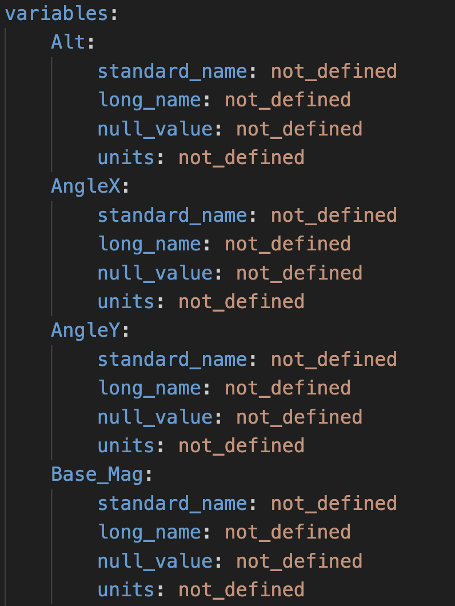

Note
Go to the end to download the full example code.
Help! I have no metadata
Generate Metadata Templates
This example shows how GSPy can help when you are just getting started with no metadata files at all, only partially complete metadata files, or large data files and need to do the tedious task of filling out the variable metadata.
GSPy provides a metadata_template function to generate a template YAML file either for Survey for Dataset metadata. These templates contain placeholder metadata dictionaries with default values of “not_defined” to help users get started filling in their survey or data variable metadata. Below are multiple example scenarios demonstrating how to generate the desired metadata templates.
{kind=link}

Example snippet of what the output template YAML file contains. For a dataset’s metadata template, each variable in the data file (e.g. columns in a CSV file) is given a dictionary of attributes with the default values of “not_defined” that the user can then go through and update.
from os.path import join
from gspy import Survey, Dataset
import matplotlib.pyplot as plt
from matplotlib import image as img
Generate the Survey Metadata Template
No existing Survey metadata, start with making a generic Survey template
template = Survey.metadata_template()
template.dump("template_survey_empty.yml")
Partial existing Survey metadata file, generate a combined template to see what might be missing
# Path to example files
data_path = '..//data_files//resolve'
# Pre-existing Survey metadata file
metadata = join(data_path, "data//Resolve_survey_md.yml")
# Generate the template, passing the pre-existing file
template = Survey.metadata_template(metadata)
template.dump("template_md_survey.yml")
Generate the Variable Metadata Template for My Dataset
Zero existing Dataset metadata file, start with making an empty Dataset metadata template
# Pass the data file (in this case a CSV) to make the template variable-specific.
# Each column in the CSV file becomes a variable by default.
data = join(data_path, 'data//Resolve.csv')
template = Dataset.metadata_template(data)
template.dump("template_md_resolve_empty.yml")
Combine with a partial existing Dataset metadata file
# Here we have a CSV data file and a partial metadata file (missing the variable attributes)
metadata = join(data_path, 'data//Resolve_data_md_without_variables.yml')
# Generate the template for this CSV dataset by combining the existing
# partial file with an empty template based on the dataset's variables
template = Dataset.metadata_template(data, metadata)
template.dump("template_md_resolve.yml")
Another CSV example ?
data_path = '..//data_files//skytem_csv'
data = join(data_path, 'data//skytem_contractor_data.csv')
metadata = join(data_path, 'data//skytem_contractor_data.yml')
template = Dataset.metadata_template(data, metadata)
template.dump("template_md_skytem.yml")
Loupe Data
data_path = '..//data_files//loupe'
data = join(data_path, 'data//Kankakee.dat')
metadata = join(data_path, 'data//loupe_data_metadata.yml')
template = Dataset.metadata_template(data_filename=data, metadata_file=metadata)
template.dump("template_md_loupe.yml")
Total running time of the script: (0 minutes 0.698 seconds)